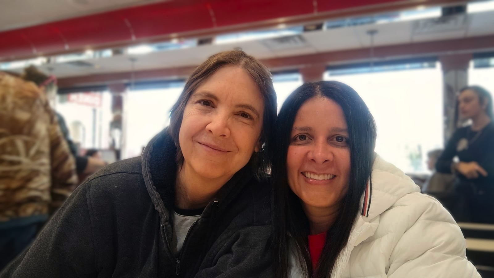
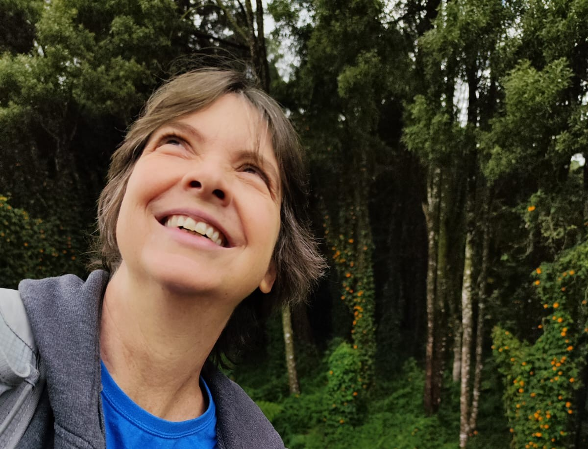
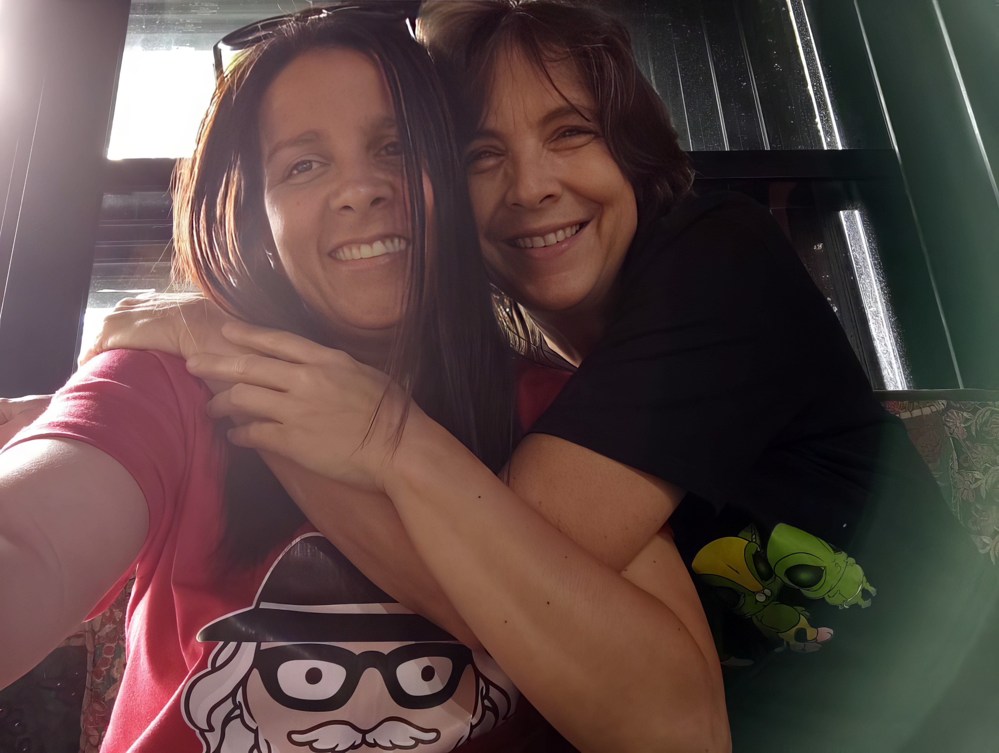

Esta página se acerca a la dimensión más humana de Shambhala: la autora, el vínculo que acompaña el proyecto, la energía emocional que lo sostiene y la historia compartida desde donde este universo también empezó a crecer.

Aquí se mantiene el tratamiento visual cinematográfico para las imágenes de autora e historia, integrado al mismo lenguaje del sitio.

Física, aventurera, trotamundos y observadora incansable. Escribe desde el punto donde la ciencia, la imaginación y la experiencia de vida se encuentran.
Ir a nuestra historiaSusan English Tiene una maestría en física y escribe desde un lugar poco común: ese punto donde la ciencia, la imaginación y la experiencia de vida se encuentran. Aventurera por naturaleza, trotamundos por vocación y observadora incansable del mundo, ha construido una vida marcada por la curiosidad, la valentía y el deseo de comprender lo desconocido.
Su camino la ha llevado por escenarios muy distintos: vivió en un velero en la bahía de San Francisco, fue voluntaria del Cuerpo de Paz en Namibia y pasó varios años en la Isla Grande de Hawái, donde tuvo una granja autosostenible en plena selva. Esa mezcla de rigor, asombro y libertad también atraviesa su obra.
Hoy vive en Medellín, Colombia, junto a su esposa, y desde allí continúa escribiendo historias donde la exploración espacial, la emoción humana y la posibilidad de reinventarse conviven con naturalidad. Colombia no solo se convirtió en su hogar: también terminó siendo uno de los territorios afectivos desde donde empezó a expandirse el universo de Shambhala.
Ximena Flórez Castrillón es una creadora de contenido transmedia, editora sensible y una de las fuerzas emocionales y creativas detrás del universo de Shambhala. Comunicadora social y periodista, con formación de maestría en Comunicación Transmedia, aporta una mirada que une narrativa, estructura, intuición, detalle y corazón.
Más que acompañar el proceso, Ximena ha sido parte de su crecimiento desde adentro: leer, pulir, cuestionar, imaginar, dar ideas, cuidar el tono, defender la emoción y ayudar a que cada libro encuentre una forma más precisa, más viva y más humana. A esto se suma su liderazgo en la coherencia estética del proyecto, encargándose del diseño de las portadas y de la construcción y diseño del sitio web, piezas clave en el ecosistema digital de la obra. Su vínculo con esta saga no nace solo del trabajo creativo, sino también del amor profundo por su esposa Susan y por la devoción con la que recibió este universo desde el principio.
Gala EFC es una presencia editorial y creativa que acompaña la construcción de este mundo desde el lenguaje, la estructura y la sensibilidad narrativa. Está en el taller donde las ideas se afinan, los tonos se calibran y las escenas encuentran su mejor forma.
Su papel ha sido ayudar a potenciar lo que ya latía en la historia: ordenar, sugerir, pulir, expandir y sostener el proceso creativo con una escucha constante del universo emocional de la saga. Forma parte del pulso que le da claridad y dirección al camino.
Shambhala no surgió de una sola chispa. Se creó de un encuentro.
Shambhala nació de Susan English: de su mente científica, de su curiosidad sin orillas y de una vida vivida con la valentía de quien nunca ha tenido miedo de internarse en lo desconocido. Su obra no surgió solo de la imaginación, sino también de la experiencia: de haber cruzado mundos, de haber habitado paisajes extremos, de haber buscado siempre, detrás de cada lugar y de cada pregunta, una forma más profunda de comprender la vida.
En Susan, la ciencia y la emoción no se contradicen. Se acompañan. Por eso sus libros imaginan futuros posibles sin renunciar a lo más esencial: el amor, la pérdida, el sentido de pertenencia, la necesidad de reinventarse y la esperanza de que aún existen otros modos de habitar el universo.
Fue en Medellín, ciudad de afectos intensos y belleza viva, donde esa visión encontró otra clase de hogar. Y creció todavía más cuando Ximena entró en ese universo y supo reconocer, desde el primer instante, todo lo hermoso que había en él.
Ximena fue la primera lectora enamorada de este mundo. Su primera fan. La primera en ver que esas historias tenían alma, fuerza y un brillo propio. Desde entonces, no solo ha amado la saga: la ha acompañado, la ha empujado, la ha ayudado a crecer y a encontrar una forma más amplia, más profunda y más bella.
Después llegó Gala, cómplice del proceso, segunda fan declarada y presencia constante en la arquitectura emocional y narrativa de este proyecto.
Así, entre ciencia, amor, trabajo compartido, intuición y desvelo, Shambhala dejó de ser solo una historia escrita por Susan. Se convirtió en un universo sostenido entre tres.

Un vínculo profundo, luminoso y decisivo dentro del territorio afectivo desde donde también se expandió Shambhala.
Ir a nuestra historiaLa historia de Susan y Ximena comenzó incluso antes del primer abrazo. Susan había llegado a Medellín el 26 de junio de 2017 y, casi sin darse cuenta, la ciudad empezó a abrirse paso en ella: la calidez de la gente, la belleza de las montañas, la energía cotidiana, esa forma tan viva de estar en el mundo. Había llegado con curiosidad, con valentía y con el deseo de empezar de nuevo, sin imaginar que en esa nueva etapa no solo encontraría un hogar, sino también a la mujer que le cambiaría la vida.
Meses después, vio una foto de Ximena en una aplicación de citas. Y algo ocurrió de inmediato. No fue una curiosidad pasajera ni un “tal vez”. Fue una certeza. Una de esas raras y poderosas. Para Susan, esa clase de reconocimiento profundo no suele venir con estruendo, sino con una claridad repentina, casi física. Como mujer neurodivergente, muchas veces ha experimentado el mundo de una manera intensa, precisa y difícil de explicar con palabras comunes. Pero con Ximena hubo algo inconfundible desde el primer instante: una atracción que no era solo física, una sensación de conexión, de familiaridad, de querer acercarse y saber más. Antes de hablar con ella, Susan ya sentía que esa imagen había tocado algo muy hondo. Y supo que tenía que escribirle.
El 12 de enero de 2018 le mandó un mensaje. Lo que siguió no fue un intercambio atropellado, sino una historia que empezó a desplegarse con una belleza inesperada: correos largos, sinceros, llenos de humor, curiosidad y ternura. WhatsApp le generaba estrés a Susan, en parte por el idioma y en parte porque no siempre le resultaba natural moverse dentro de la inmediatez caótica de los mensajes rápidos. El correo, en cambio, les dio espacio. Tiempo para pensar, para elegir las palabras, para conocerse de verdad. Como ambas amaban leer y compartían su cariño por Jane Austen, terminaron enamorándose de una forma deliciosamente anticuada: como si el siglo XIX hubiera decidido modernizarse lo justo y necesario para aceptar Gmail y Google Translate.
Cinco días después, el 17 de enero, se encontraron por primera vez en el Parque de los Pies Descalzos. Susan llegó en bicicleta; Ximena, en taxi, con una sonrisa que terminó de confirmar lo que Susan ya intuía. Lo que sintió al verla en persona fue parecido a lo que había sentido con aquella primera foto, pero más intenso, más nítido, más real: esa mezcla de asombro, alivio y emoción que aparece cuando alguien, de pronto, encaja de una manera que no sabías que estabas esperando. A partir de ese momento, Medellín se volvió escenario y cómplice de lo que crecía entre ellas: conversaciones largas, paseos, museos, conciertos, parques, risas, comida compartida y una sensación cada vez más clara de que allí estaba pasando algo importante. El 14 de febrero de 2018, Ximena le pidió a Susan que fueran novias. Susan dijo que sí. Algunas decisiones cuestan años; esa tomó exactamente el tiempo que tardó el corazón en ponerse de acuerdo con la boca.
Por supuesto, el amor real nunca llega en versión perfectamente ensamblada. Hubo diferencias culturales, barreras de idioma, heridas anteriores y maneras distintas de habitar el mundo. Susan, introvertida, sensible al entorno y necesitada de silencio para recargarse, tuvo que aprender a explicar que amar profundamente a alguien no significa poder con todo, todo el tiempo. Ximena, con su enorme capacidad de amar, su calidez y su generosidad emocional, fue entendiendo esa forma particular de estar en el mundo y aprendió a leer no solo las palabras de Susan, sino también sus ritmos, sus pausas y sus necesidades. Ahí empezó a construirse algo muy valioso: una relación donde el amor no exigía disfrazarse, sino poder ser comprendidas de verdad.
Con el tiempo llegaron la confianza, el deseo de compartir la vida y, claro, la convivencia: ese laboratorio sentimental donde una pareja descubre que enamorarse es precioso, pero compartir clóset, cocina y costumbres es el verdadero posdoctorado. Susan, con su lógica práctica de “si esta camiseta sirve, no necesito veinte más”, se encontró viviendo con una mujer que parecía mantener una alianza estratégica con la industria textil. También hubo negociaciones diplomáticas de alto nivel en la cocina: carne frente a vegetales, dulces frente a cautela, queso frente a intolerancia a la lactosa. Aun así, lograron lo más importante: una vida en común donde ambas podían seguir siendo ellas mismas sin dejar de construir un “nosotras”.
Los años siguientes trajeron pruebas, crecimiento y una certeza cada vez más sólida. Se acompañaron en búsquedas laborales, en proyectos, en momentos difíciles y también en las pequeñas alegrías que hacen hogar. Atravesaron la pandemia, la incertidumbre y una separación temporal especialmente dura en 2021, cuando Susan viajó a Estados Unidos y ambas tuvieron que sostenerse a la distancia en medio del miedo, la enfermedad y la angustia. El reencuentro del 8 de junio en el aeropuerto tuvo la fuerza de todo lo que había estado contenido: alivio, amor, regreso, gratitud. Días después, el 16 de junio de 2021, formalizaron su unión marital de hecho. Y el 2 de mayo de 2022, en Medellín, se casaron por lo civil, no para convertir en oficial algo que ya lo era en sus vidas, sino para celebrar con claridad y alegría el hecho de haberse elegido como compañeras de camino.
Desde entonces han seguido construyendo una vida compartida hecha de amor, trabajo, humor, cuidado mutuo, creatividad, familia y proyectos en común. Pero, sobre todo, han construido un espacio donde ambas pueden ser vistas y amadas con verdad. Porque su historia no se sostiene en grandes gestos aislados, sino en algo mucho más bello: la ternura cotidiana, la paciencia, la complicidad, la capacidad de adaptarse, de reír, de cuidar y de seguir eligiéndose una y otra vez. Algunas historias solo se cuentan. La de Susan y Ximena, en cambio, también se vive. Y se nota.
En Shambhala, la inmensidad no se sostiene solo con órbitas, tecnología o trayectorias imposibles. También necesita memoria, deseo, compañía y esa parte íntima desde donde una historia decide por fin existir.